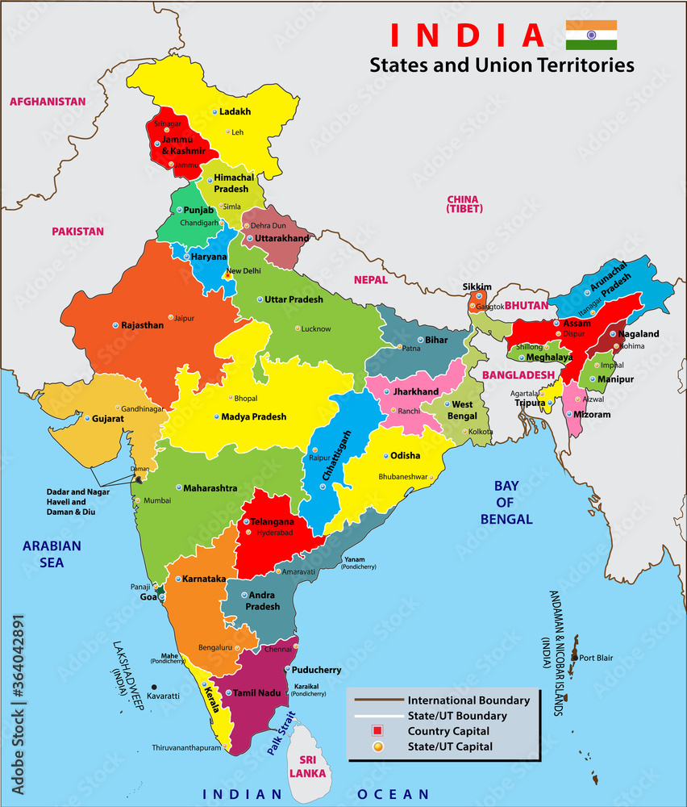

INDIAN MAP
STATE :- Andhra Pradesh, Arunachal Pradesh, Assam, Bihar, Chhattisgarh, Goa, Gujarat, Haryana, Himachal Pradesh, Jharkhand, Karnataka, Kerala, Madhya Pradesh, Maharashtra, Manipur, Meghalaya, Mizoram, Nagaland, Odisha, Punjab, Rajasthan, Sikkim, Tamil Nadu, Telangana, Tripura, Uttar Pradesh
